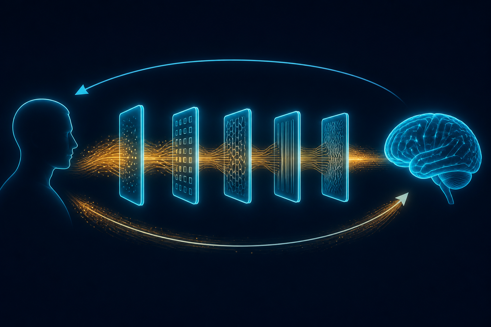

L4: Harnesses
Runtime control over your agent's mind.

Stop Asking The Agent Nicely
L1 was prompts. L2 added tools. L3 gave the agent skills and a wiki it could read. L4 is where you stop asking the agent nicely and start controlling what it sees, when, and how.
A harness controls what information flows TO the agent and FROM the agent at runtime. Not at design time. Not in the system prompt. At runtime, on every turn, programmatically.
The harness is not a safety net. It's the rails. Without rails, the agent freestyles. Freestyle is fine for demos. Rails are for production.
MCPs At L2 vs MCPs At L4
An MCP at L2 says: "the agent can call this API." That's a capability. That's L2.
An MCP at L4 says: "before the agent calls this, run a pre-check. After the agent calls this, transform the output. If the output drifts from the schema, reject it and re-prompt." That's a harness. Same MCP. Different layer.
The wrapper around the tool IS the harness. The tool itself is just plumbing.
The Components
Hooks
A hook fires at a fixed point in the runtime. PreToolUse fires BEFORE the agent's tool call lands. Stop fires AFTER the agent says "I'm done." Hooks see the state. Hooks can mutate the state. Hooks can block.
Use them to enforce things the agent has no incentive to enforce on itself:
PreToolUse: - Did the agent read the file before editing it? - Is this tool allowed in the current context? - Does the payload match the schema? Stop: - Did the agent emit the required entity chain? - Did the agent close the loop on what it promised? - Is there a structural proof of completion?
CoR Templates
CoR is Chain of Reasoning. A CoR template has slots — blanks the LLM must fill on every turn. Filling them forces the model to connect what it knows to what it's doing right now.
"Now I understand {{concept}} applies to {{task}}
because {{connection}}."
A static sentence with no blanks activates nothing. The blanks are the mechanism. The template constrains the geometry of the response without dictating the content.
Flight Configs
A flight config is a replayable, step-by-step state machine that guides the agent through a long task. It's a recipe with checkpoints. Each step says: load this context, run this tool, validate this output, then advance.
The agent doesn't get to skip ahead. It doesn't get to forget step 3. The flight remembers.
SANCTOT: A Worked Example
SANCTOT is a 7-step resolution chain that FORCES a specific geometry on the agent's output:
1. primitive — what is the irreducible thing? 2. function — what does it do? 3. transition — what changes when it acts? 4. promise — what does it commit to? 5. failure — what happens if the promise breaks? 6. ritual — what's the repeatable pattern that holds it? 7. action — what's the next concrete step?
An agent without SANCTOT will skip "failure" because failures are uncomfortable. It will skip "ritual" because rituals feel redundant. It will collapse "promise" into "function" because they sound similar.
An agent with SANCTOT can't skip any of them. The harness enforces the shape. Every output has all seven slots, in order. The agent fills them. The harness verifies.
The harness doesn't make the agent smarter. It makes the agent structured. Structure is what compounds.
The Fork In The Road
L4 is the fork. After L4 you have two paths:
Path A — Deploy and profit
Your agent is reliable enough. It handles the cases you care about. The variance in its outputs is bounded by the harness. Ship it. Bill clients. This is where most AI businesses live. It's a real place. It works.
Path B — Admissibility
You're not satisfied with "reliable enough." You want the agent to provably not hallucinate at all, ever, on the domain you care about. You want the system to know what it knows and refuse to fabricate the rest.
That's L5. That's the deep path. That's the next post.
What This Looks Like In Practice
Our harness stack is open. Hooks are Python scripts in ~/.claude/hooks/. CoR templates are skill files. Flight configs are versioned, replayable, queryable. The whole thing is in SANCREV OPERA.
The reason we can ship reliable AI businesses for clients in days instead of months is because the harness layer is already built. We're not writing it from scratch every time. The agent inherits a harness with thousands of hours of structural engineering already baked in.